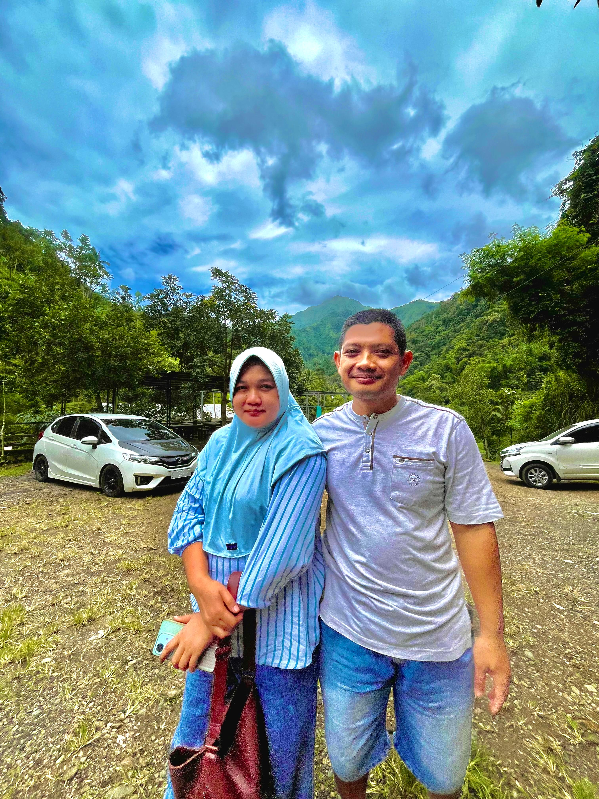
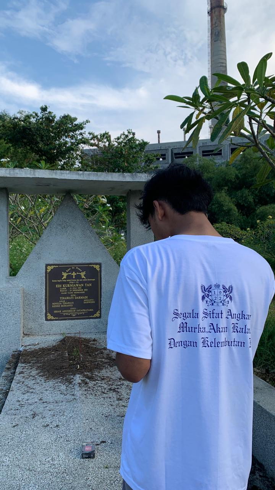
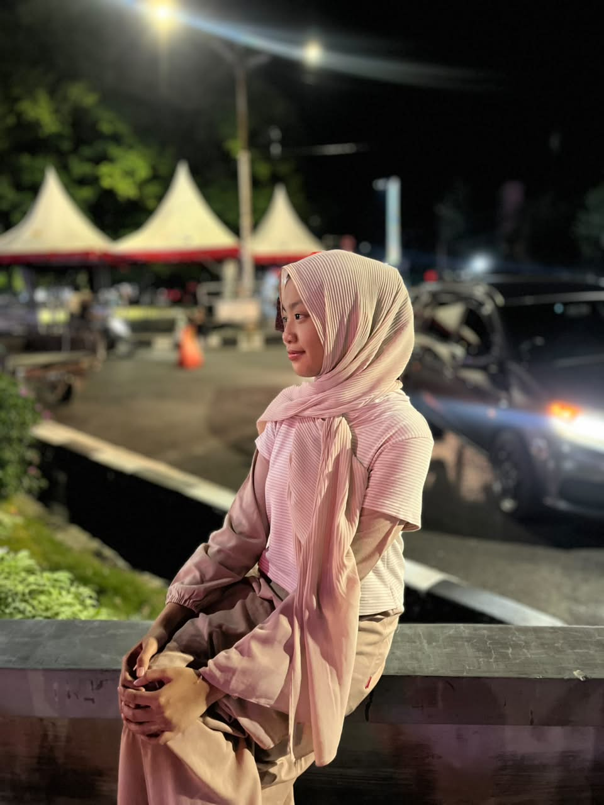

Anggota Keluarga

Ayah & Mamah
Pondasi utama keluarga yang penuh kasih sayang.

Faris Arjuna Isnuadi
Anak Pertama

Kirani Aisyah Putri Lestari
Anak Kedua

Fadhil Samudra Hariadi
Anak Ketiga
Keluarga adalah tempat pertama untuk belajar cinta, kasih sayang, dan kebersamaan.
Lihat Keluarga Kami
Pondasi utama keluarga yang penuh kasih sayang.

Anak Pertama

Anak Kedua
Anak Ketiga
Keluarga adalah tempat pulang yang selalu menerima kita apa adanya. Di dalam keluarga terdapat cinta, dukungan, perhatian, dan kebersamaan yang menjadi kekuatan dalam menjalani kehidupan.
Keluarga yang harmonis dibangun dengan kejujuran,
saling menghormati, dan saling membantu dalam setiap keadaan.
Setiap anggota keluarga memiliki tanggung jawab untuk menjaga
kedamaian dan kebahagiaan bersama.
Perbedaan pendapat adalah hal yang wajar,
namun harus diselesaikan dengan komunikasi yang baik
dan penuh rasa hormat.
Jangan pernah melupakan pentingnya waktu bersama,
karena kebersamaan yang sederhana akan menjadi kenangan
yang berharga sepanjang hidup.
Dengan kasih sayang, kesabaran, dan rasa syukur,
keluarga akan menjadi tempat paling nyaman untuk tumbuh,
belajar, dan meraih impian.